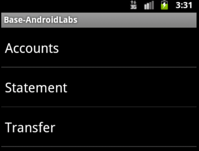
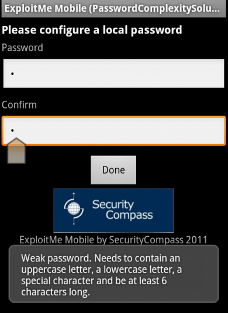

Lab 8 - Client-side Password complexity
The default configuration for the password lock screen is to enforce a password that is not blank.
You’ll notice in the insecure default ExploitMe Mobile insecure version (base), the password screen allows any number of characters or letters as the lock screen. Even a password containing only one character is allowed.
You can try this by setting a password on the lock screen of a very simple nature such as “1”. Often, it is beneficial to enforce a more secure password lock screen depending on the nature of the application and its data sensitivity.

In the case above, the local password has been set by the user to be only 1 character. The password is accepted as can be seen below.

In this lab, you’ll learn how to better implement a secure lockscreen in code.
Solution
Let’s first deploy the PasswordComplexitySolution.apk file which contains the more secure password lock screen.
Upon launching and installing into your emulator, you’ll notice immediately that the password screen looks different.
The password screen now requires a upper case, lowercase, special character and minimum length requirements.
Now, you may feel this is excessive, but the point is to demonstrate that it is possible to have the same strict requirements as online web banking websites, you can take our solution an adapt it in whichever way you desire.
